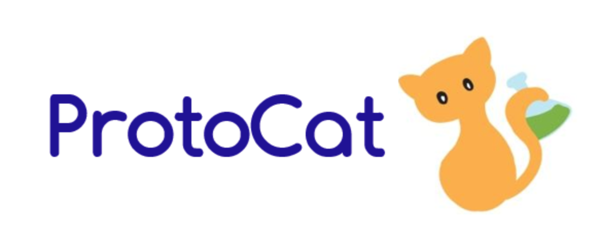

Skip to content
Projects
Michigan Biological Software Team - Protocat.org
-
Redesigned front end elements for the next generation of ProtoCat.org, a website providing a database
of experiment protocols, enabling University of Michigan biology lab teams to efficiently perform
synthetic biology research.
-
Languages: ReactJS, HTML, CSS

EECS 183 - Artificial Intelligence Tweet Generator
>
-
Created Twitter bot in Python that automatically generates and posts grammatically correct tweets based
on language patterns and grammar of existing Twitter accounts
-
Modeled transition probabilities between n-grams and parts of speech to generate grammatically correct
sentences, integrated Twitter API functions into n-gram model algorithms, and created a GUI using
Python’s Tk interface
-
Twitter bot enabled user to input usernames of real Twitter accounts to generate tweets mimicking their
styles (e.g., user input of “realDonaldTrump” and “DalaiLama” generated tweet saying, “Crooked Hillary
Clinton is the only real source of genuine human happiness.”)
-
Languages: Python